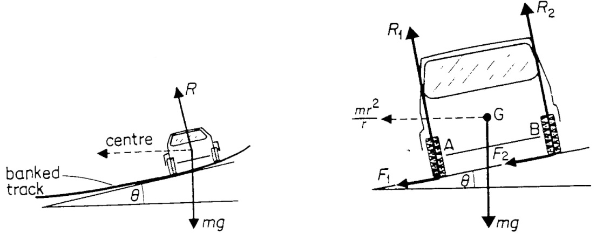

- As a vehicle moves round a bend, the centripetal force is provided by the sideways friction between the tyres and the surface, that is;
Centripetal force = mv2/r = frictional force - To enable a vehicle to turn along a bend at high speed the road is raised on the outer edge to attain a saucer-like shape and this is known as banking, where part of the centripetal force necessary to keep the vehicle on track is provided by the weight of the vehicle. This allows cars to negotiate bends at critical speeds.

Uniform Circular Motion